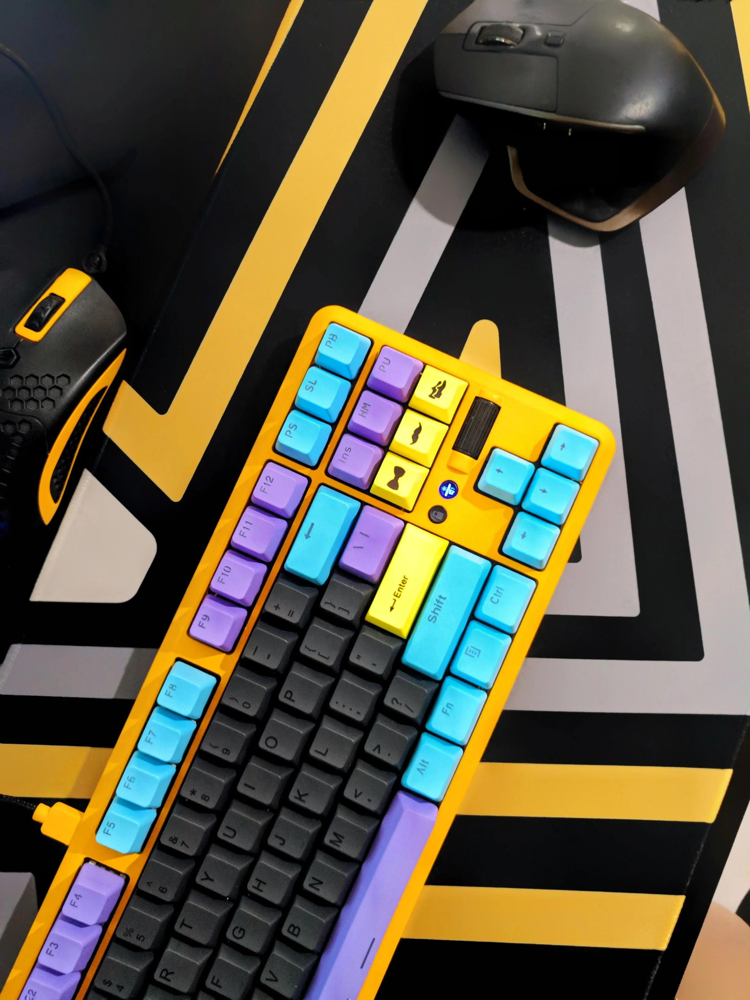

|  | A peripheral or peripheral device is an auxiliary device used to put information into and get information out of a computer. The term peripheral device refers to all hardware components that are attached to a computer and are controlled by the computer system, but they are not the core components of the computer, such as the CPU or power supply unit. In other words, peripherals can also be defined as devices that can be easily removed and plugged into a computer system. |
Several categories of peripheral devices may be identified, based on their relationship with the computer. An input device sends data or instructions to the computer, such as a mouse, keyboard, graphics tablet, image scanner, barcode reader, game controller, light pen, light gun, microphone and webcam; An output device provides output data from the computer, such as a computer monitor, projector, printer, headphones and computer speaker; An input/output device performs both input and output functions, such as a computer data storage device (including a disk drive, solid-state drive, USB flash drive, memory card and tape drive), modem, network adapter and multi-function printer. Many modern electronic devices, such as Internet-enabled digital watches, keyboards, and tablet computers, have interfaces for use as computer peripheral devices. |
|